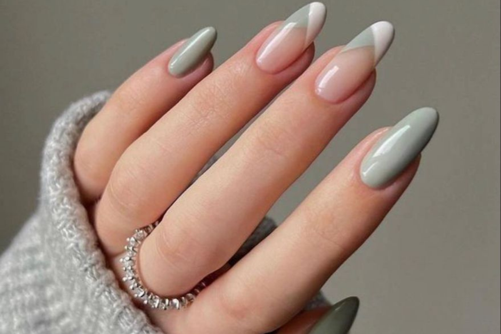

passo a passo de como fazer um alongamento de unha, primeiro você deve lixar o leito natural da sua cliente ate
retirar todo o briho da lâmina em seguia você deve usar os prepadores quimicos como:desidratador e primer adesivador
em seguida usar o gel capa base e deixar por 30 segundos na cabine de LED/UV para catalizar em seguida a estrutura
Como é feito: primeiro, se aplica a fibra de vidro nas unhas naturais e, posteriormente, vem a colocação do gel.
Aqui, também será preciso secar na cabine de luz. “A fibra funciona como uma base, facilitando a construção em
qualquer formato, como a unha bailarina, quadrada, stiletto e almond”.
Vantagens: a unha de fibra de vidro é um dos alongamentos mais resistentes. Os dois materiais que o compõem auxiliam
em sua durabilidade. “Podemos destacar ainda o fato de que se molda ao formato original da unha, garantindo
naturalidade”.